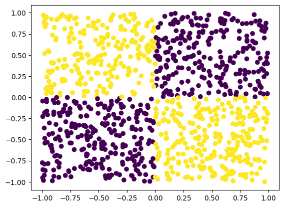

Contextualized GAMs#
import numpy as np
import pandas as pd
import matplotlib
import matplotlib.pyplot as plt
%matplotlib inline
from sklearn.model_selection import train_test_split
import sys
print(sys.version_info)
from sklearn.metrics import roc_auc_score as roc
from sklearn.metrics import f1_score
from contextualized.easy import ContextualGAMClassifier
sys.version_info(major=3, minor=10, micro=8, releaselevel='final', serial=0)
X = np.random.uniform(-1, 1, size=(1000, 2))
Y = np.logical_xor(X[:, 0] > 0, X[:, 1] > 0)
plt.scatter(X[:, 0], X[:, 1], c=Y)
col_names = [i for i in range(X.shape[1])]
X = pd.DataFrame(X, columns=col_names)
Y = pd.DataFrame(Y).astype(int)
# Model can handle either regression or classification, but plotting currently implemented for classification.

contextual_feats = col_names
explainable_feats = []
for feat in contextual_feats:
explainable_name = "{} Elev.".format(feat)
X[explainable_name] = X[feat] > 0.
X[explainable_name] = X[explainable_name].astype(int)
explainable_feats.append(explainable_name)
contextual = X[contextual_feats].copy()
explainable = X[explainable_feats].copy()
C_train, C_test, X_train, X_test, X_all_train, X_all_test, Y_train, Y_test = train_test_split(
contextual, explainable, X, Y, test_size=0.25)
X_train.shape, Y_train.shape, C_train.shape
((750, 2), (750, 1), (750, 2))
# Fit Contextualized GAMs.
cgam = ContextualGAMClassifier(num_archetypes=X_train.shape[1],
encoder_kwargs={'width': 4, 'layers': 2},
encoder_link_fn='linear',
alpha=1e-1, val_split=0.2, learning_rate=1e-3, n_bootstraps=3)
cgam.fit(C_train.values, X_train.values, Y_train.values)
---------------------------------------------------------------------------
KeyError Traceback (most recent call last)
Cell In [5], line 2
1 # Fit Contextualized GAMs.
----> 2 cgam = ContextualGAMClassifier(num_archetypes=X_train.shape[1],
3 encoder_kwargs={'width': 4, 'layers': 2},
4 encoder_link_fn='linear',
5 alpha=1e-1, val_split=0.2, learning_rate=1e-3, n_bootstraps=3)
6 cgam.fit(C_train.values, X_train.values, Y_train.values)
File ~/Dropbox/Professional/Research/Libraries/Contextualized/contextualized/easy/ContextualGAM.py:17, in ContextualGAMClassifier.__init__(self, **kwargs)
15 def __init__(self, **kwargs):
16 kwargs["encoder_type"] = "ngam"
---> 17 super().__init__(**kwargs)
File ~/Dropbox/Professional/Research/Libraries/Contextualized/contextualized/easy/ContextualizedClassifier.py:18, in ContextualizedClassifier.__init__(self, **kwargs)
16 def __init__(self, **kwargs):
17 kwargs["link_fn"] = LINK_FUNCTIONS["logistic"]
---> 18 super().__init__(**kwargs)
File ~/Dropbox/Professional/Research/Libraries/Contextualized/contextualized/easy/ContextualizedRegressor.py:40, in ContextualizedRegressor.__init__(self, **kwargs)
38 extra_data_kwargs = ["Y_val"]
39 trainer_constructor = RegressionTrainer
---> 40 super().__init__(
41 constructor,
42 extra_model_kwargs,
43 extra_data_kwargs,
44 trainer_constructor,
45 **kwargs,
46 )
File ~/Dropbox/Professional/Research/Libraries/Contextualized/contextualized/easy/wrappers/SKLearnWrapper.py:99, in SKLearnWrapper.__init__(self, base_constructor, extra_model_kwargs, extra_data_kwargs, trainer_constructor, **kwargs)
92 self.constructor_kwargs["encoder_kwargs"]["width"] = kwargs.get(
93 "width", self.constructor_kwargs["encoder_kwargs"]["width"]
94 )
95 self.constructor_kwargs["encoder_kwargs"]["layers"] = kwargs.get(
96 "layers", self.constructor_kwargs["encoder_kwargs"]["layers"]
97 )
98 self.constructor_kwargs["encoder_kwargs"]["link_fn"] = kwargs.get(
---> 99 "encoder_link_fn", self.constructor_kwargs["encoder_kwargs"]["link_fn"]
100 )
101 self.not_constructor_kwargs = {
102 k: v
103 for k, v in kwargs.items()
104 if k not in self.constructor_kwargs and k not in self.convenience_kwargs
105 }
106 # Add Predictor-Specific kwargs for parsing.
KeyError: 'link_fn'
train_preds = cgam.predict_proba(C_train.values, X_train.values)[:, 0, 1]
test_preds = cgam.predict_proba(C_test.values, X_test.values)[:, 0, 1]
results = {
"cgam": {
"train": {
"roc": roc(Y_train, train_preds),
"f1": f1_score(Y_train, np.round(train_preds))
},
"test": {
"roc": roc(Y_test, test_preds),
"f1": f1_score(Y_test, np.round(test_preds))
}}}
print("Train ROC: {:.2f}, F1: {:.2f}".format(results['cgam']['train']['roc'], results['cgam']['train']['f1']))
print("Test ROC: {:.2f}, F1: {:.2f}".format(results['cgam']['test']['roc'], results['cgam']['test']['f1']))
# Plot Homogeneous (Background effects).
# In this example of XOR interaction, these effects should be 0.
from scContextualized.plot_utils import plot_homogeneous_tx, plot_heterogeneous
plot_homogeneous_tx(cgam.predict_params, C_train, X_train.values, X_train.columns)
# Plot Heterogeneous (Interactive effects).
# In this example of XOR interaction, the cross-effects (1->0 Elevated) and (0->1 Elevated) are strong.
plot_heterogeneous(cgam.predict_params, C_train, X_train.values,
[], np.zeros((C_train.shape[1])), np.ones((C_train.shape[1])),
X_train.columns)